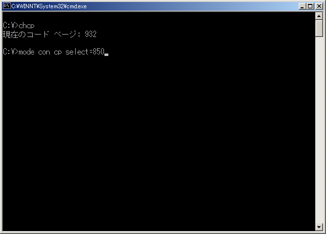
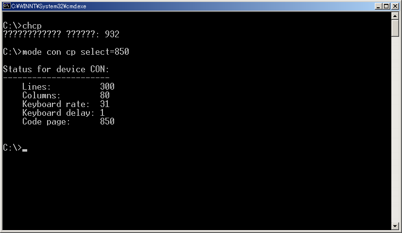

Page 1 of 1
Any difference in MODE or CHCP when setting code page?
Posted: 13 Sep 2018 18:20
by CirothUngol
Just a quick question... is there any difference in using CHCP nnn or MODE CON CP SELECT=yyy when setting code pages? Perhaps one is older or more available, therefore being more compatible?
Re: Any difference in MODE or CHCP when setting code page?
Posted: 13 Sep 2018 19:14
by carlos
Only on windows 2000 and windows xp: "chcp" do a clear of the screen (like cls) after change the codepage from a double byte codepage to a single byte codepage and viceversa.
With "mode con cp select" it not happen.
Evidence:
Before change from 932 codepage to 850 using chcp :
After change from 932 codepage to 850 using chcp :
Before change from 932 codepage to 850 using mode :

After change from 932 codepage to 850 using mode :

That was the reason for choose "mode" instead "chcp" for change the codepage in the fixed genchr code:
viewtopic.php?f=3&t=5326&p=56708#p56709
Similiarities: Both "chcp" and "mode" change the Input and Output Codepage, unlike old "graftabl" that change only the Output Codepage. Info:
https://ss64.org/viewtopic.php?id=1622
Re: Any difference in MODE or CHCP when setting code page?
Posted: 13 Sep 2018 19:16
by CirothUngol
Thanks for the info Carlos, that's good enough reason to use it instead. ^_^